🎯 Боеприпасы
 Гатлинговые патронывес 0,025
Гатлинговые патронывес 0,025
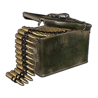
Гатлинговые патроны
Патрон для оружия: Пулемёт Гатлинга — и похожего.
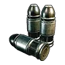
Гранатомётный патронвес 0,1
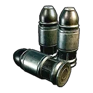
Гранатомётный патрон
Патрон для оружия: Гранатомёт — и похожего.
 Грубые патронывес 0,025
Грубые патронывес 0,025
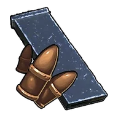
Грубые патроны
Патрон для оружия: Мушкет, Самодельный пистолет — и похожего.
 Кассета для лазерной картечницы Гатлингавес 0,025
Кассета для лазерной картечницы Гатлингавес 0,025
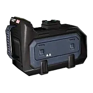
Кассета для лазерной картечницы Гатлинга
Патрон для оружия: Лазерный пулемёт Гатлинга — и похожего.
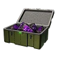
Метеоритный снарядвес 1
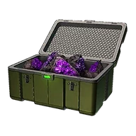
Метеоритный снаряд
Патрон для оружия: Метеоромёт — и похожего.
 Огненная стрелавес 0,025
Огненная стрелавес 0,025
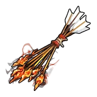
Огненная стрела
Огненная стрела для стрельбы из лука. При попадании наносит урон стихии «Огонь».
 Патрон для боевого пистолет-пулемётавес 0,025
Патрон для боевого пистолет-пулемётавес 0,025
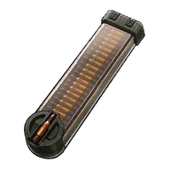
Патрон для боевого пистолет-пулемёта
Патрон для оружия: Боевой пистолет-пулемёт — и похожего.
 Патрон для бустерной пушкивес 0,025
Патрон для бустерной пушкивес 0,025
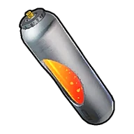
Патрон для бустерной пушки
Патрон для оружия: Бустерная пушка — и похожего.
 Патрон для винтовкивес 0,025
Патрон для винтовкивес 0,025
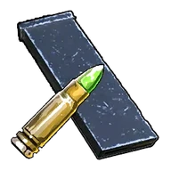
Патрон для винтовки
Патрон для винтовок и аналогичного оружия.
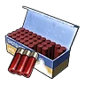
Патрон для дробовикавес 0,025
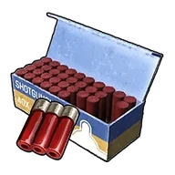
Патрон для дробовика
Патрон для дробовиков и аналогичного оружия.
 Патрон для зарядной винтовкивес 0,01
Патрон для зарядной винтовкивес 0,01
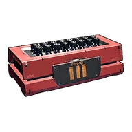
Патрон для зарядной винтовки
Патрон для оружия: Зарядная винтовка — и похожего. цив.
 Патрон для лучемётавес 0,025
Патрон для лучемётавес 0,025
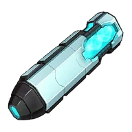
Патрон для лучемёта
Патрон для оружия: Лучемёт — и похожего.
Патрон для лучерассеивателявес 0,025
Патрон для лучерассеивателя
Патрон для оружия: Лучерассеиватель — и похожего.
 Патрон для пистолетавес 0,025
Патрон для пистолетавес 0,025
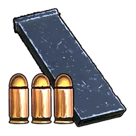
Патрон для пистолета
Патрон для оружия: Пистолет — и похожего.
Патрон для плазменной винтовкивес 0,025
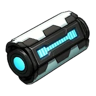
Патрон для плазменной винтовки
Патрон для оружия: Плазменная винтовка — и похожего.
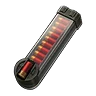
Патрон для прототипного дробовикавес 0,025
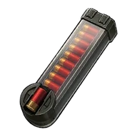
Патрон для прототипного дробовика
Патрон для оружия: Прототипный дробовик — и похожего.
 Патрон для тактического гранатомётавес 0,025
Патрон для тактического гранатомётавес 0,025
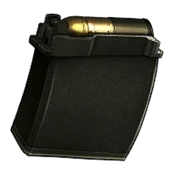
Патрон для тактического гранатомёта
Патрон для оружия: Тактический гранатомёт — и похожего.
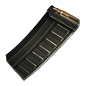
Патрон для тяжёлой штурмовой винтовкивес 0,025
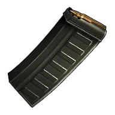
Патрон для тяжёлой штурмовой винтовки
Патрон для оружия: Тяжёлая штурмовая винтовка — и похожего.
 Патрон для штурмовой винтовкивес 0,01
Патрон для штурмовой винтовкивес 0,01
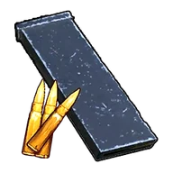
Патрон для штурмовой винтовки
Патрон для оружия: Штурмовая винтовка — и похожего.
 Патрон для энергетического ружьявес 0,025
Патрон для энергетического ружьявес 0,025
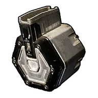
Патрон для энергетического ружья
Патрон для оружия: Энергетическое ружье — и похожего. цив.
 Плазматическая кассетавес 0,5
Плазматическая кассетавес 0,5
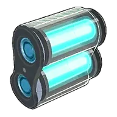
Плазматическая кассета
Патрон для оружия: Плазменная пушка — и похожего.
 Ракета с наведениемвес 1
Ракета с наведениемвес 1
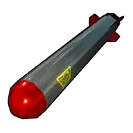
Ракета с наведением
Патрон для оружия: Ракетная установка — и похожего.
 Ракетный снарядвес 0,5
Ракетный снарядвес 0,5
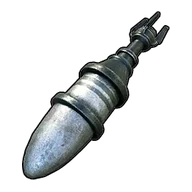
Ракетный снаряд
Боеприпас для оружия: Ракетомёт — и похожего.
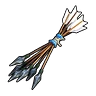
Стрелавес 0,025
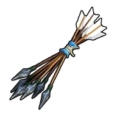
Стрела
Стрела для стрельбы из лука.
 Стрела механического лукавес 0,025
Стрела механического лукавес 0,025
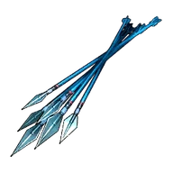
Стрела механического лука
Усиленная стрела, предназначенная для стрельбы из оружия «Механический лук».
 Топливо для огнемётавес 0,01
Топливо для огнемётавес 0,01
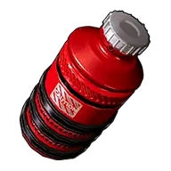
Топливо для огнемёта
Топливо для огнемёта. Патрон для оружия: Огнемёт — и похожего.
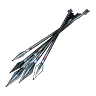
Улучшенная стрелавес 0,025
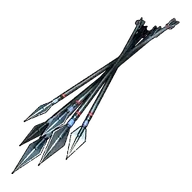
Улучшенная стрела
Усиленная стрела, предназначенная для стрельбы из оружия «Улучшенный лук».
 Усиленная стрелавес 0,025
Усиленная стрелавес 0,025
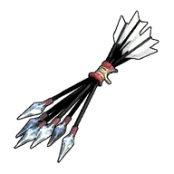
Усиленная стрела
Усиленная стрела, предназначенная для стрельбы из оружия «Блочный лук».
 Чернила для граффитивес 0,05
Чернила для граффитивес 0,05
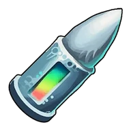
Чернила для граффити
Патроны для граффити-ружья. Позволяют рисовать изображения Палов с помощью чернил.
 Энергетический картриджвес 0,01
Энергетический картриджвес 0,01
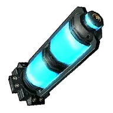
Энергетический картридж
Патрон для оружия: Лазерная винтовка — и похожего.
 Ядовитая стрелавес 0,025
Ядовитая стрелавес 0,025
Ядовитая стрела
Ядовитая стрела для стрельбы из лука. При попадании накладывает на цель Яд.